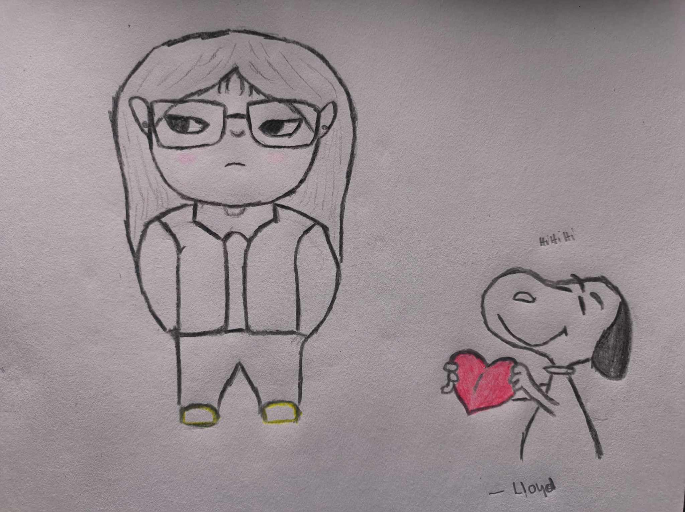
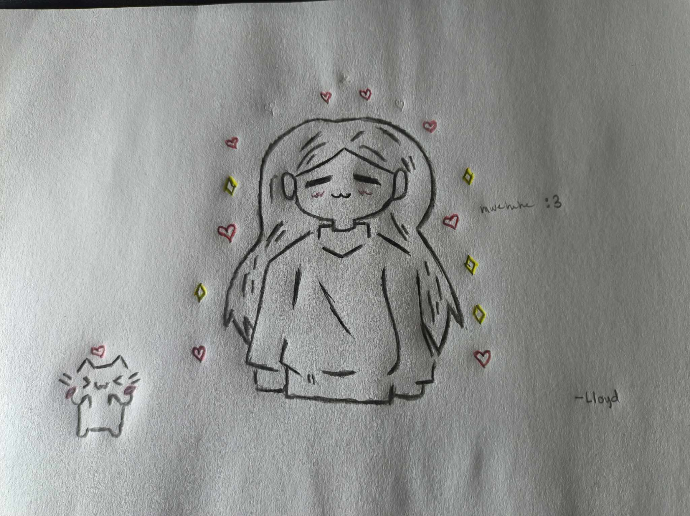

Hello Ayanaüå∏
This might be out of the blue, but I find myself reflecting on all the reasons you make my heart flutter. Your kindness and how you effortlessly weave interesting thoughts into every conversation fill my days with joy and wonder.
I cherish the moments we share—whether it's losing ourselves in movies and series or simply enjoying each other's company. We’ve laughed until our sides ached and cried when the emotions were just too overwhelming. Those times together have created memories I hold dear.
Your talents never cease to amaze me. Watching you play the guitar, and hearing your voice is truly enchanting. You have this remarkable strength that I deeply admire, and I find myself in awe of the incredible woman you are.
Sharing my poems and letters with you means the world to me. The way you read them and react to them makes me feel truly appreciated and understood. It’s a beautiful feeling to know someone values my work. I really appreciate you spending time with me.
I just want you to know how much you mean to me, and how your presence makes my world a brighter place. Happy Valentine's Day!
Yours sincerely, Lloyd.
Your Hirono Version hihiüå∏
Remember mo yung nag my day ka tapos ginaya mo si dionila dito ko nakuha yung suot mo that time AHAHAAHA

My Letters/poems
What I'm about to say takes the kind of courage you need to cut a wire from a bomb. My mouth is dry, my palms are sweaty, and my head's spinning in the sky. This is terrifying, but I have to try. I have to take this chance.
there's a real risk that you'll pull away, that this will ruin the comfortable friendship we're both enjoying right now. But there's an even bigger risk: the regret I'd feel if I didn't try, if we both threw away the chance at something more than friendship, something truly special.
You are a work of art, inside and out. I'm completely captivated by everything you do, by the way you laugh, the way you think, the way you simply are. And yes, I'll admit, I'm a little jealous of the guy who tried to win your heart before. But my biggest goal, my deepest hope, is that someday, he'll be the one envying me.ü§™
Maybe I'll tell you how much I admire your kindness, your intelligence, your everything. Maybe I'll tell you that I love you. And maybe, just maybe, it's finally time that you knew.
Because I know for certain, deep down in my soul, that I admire you. And I'm ready to take that leap of faith.
Love was never something I chased—in fact, I did my best to stay out of its way, keeping my distance from all its complexities and uncertainties. But then, completely unexpectedly, you appeared, and in an instant, everything changed. My world was turned upside down, spinning so fast I could barely catch my breath, as if a whirlwind had swept through the careful walls I had built.
Everything I thought I knew—every belief, every certainty—was rewritten the moment you walked into my life. Now, in this dizzying new reality, there is only you. You are the one clear, undeniable truth in the chaos.
Your eyes hold the depth of a vast universe, yet your laughter is as warm and familiar as a nearby star. I feel incredibly blessed, as if the heavens themselves conspired to bring me someone as remarkable as you. You are beautiful in every way—kind, radiant, and full of stories waiting to be discovered.
And I don’t say these things lightly. My words are not empty sentiments or fleeting emotions—I mean every single one. I won’t make promises that might one day turn into disappointments; instead, I will prove my love in ways that will never bring you pain. I won’t offer mere words—I will show you, every single day, through my actions, my choices, and my unwavering commitment to you. No matter what comes our way, I will always choose you. I will always stand by you, fight for you, and love you with everything I have.
The things you say, so thoughtfully and kind, are beautiful,
They linger in my mind, making each moment wonderful.
The way you laugh, a melody so sweet and bright,
And your pretty smile, it fills my world with light.
I wish you were here, to share these moments with me,
I wish you were near, where our spirits can be free.
To walk hand-in-hand, beneath the starry sky,
And whisper secrets that make our hearts fly.
The way you sing, with passion and with grace, is beautiful,
Your voice is like a dream, in this enchanting place.
It touches my soul, a tender, loving art,
Leaving me captivated, with a brand new start.
I see the weight you're carrying inside,
The hard times you've been through, the tears you've cried.
Life feels heavy, the road feels long,
But even in the dark, God's hope is still strong.
There are days when the world isn't very nice,
When you doubt yourself and it clouds your eyes.
But even in the dark, stars can appear,
And God will give you strength after the hard times are over, I swear.
The rain will stop, the clouds will go away,
The sun will come out and make a brighter day.
This pain you feel won't last forever,
It's where your strength will grow, with God's help, you'll get better.
Hold on, be brave, you're not by yourself,
Good things are coming, I can tell.
And even though you're tired, please believe,
Everything will be okay, just breathe, God's peace receive.
I wanted to love you deeply. Not just a little, in ways no one else could even imagine, but in a way that truly stayed with you. I didn't care about being better than anyone else; I just wanted to give you a love that felt… profound.
If someone wrote you a quick note, I wanted to write you pages and pages about how your laugh makes me feel, or how your eyes shine when you're passionate about something. If someone created you a verse, I wanted to give you an entire poem that unraveled everything I've ever felt for you, even the parts I was too scared to admit. They could give you a chapter, but I wanted to give you the whole story – a story where you're the main character, and I'm always choosing you, over and over.
They might see your strength and your depth, like the ocean. But I noticed your tears, the little vulnerable parts of you that other people miss. They see the big waves, but I see the quiet moments, the stillness. And those little pieces? They're precious to me.
If someone gave you a simple snack, I'd bring you something that takes effort, something a little messy. Because loving you isn't about what's easy; it's about what's worth it. I'd put in the work, even if it's a little difficult, just to show you how much you mean to me. The easy way never felt right for you.
Because my feelings for you were never going to be simple. They were always going to be… extraordinary. I wanted to know everything about you, even the parts you try to hide. I wanted to understand all your layers, your complexities. I wanted to love you even when you're not having your best day, when you're feeling down or overwhelmed.
I didn't just want to care about you. I wanted to know you, really know you. See all your imperfections and still… choose you. I wanted to be there for you not just when things are good, but especially when they're tough.
Maybe someone else can give you things I can't. Maybe they can make you laugh harder, or make you feel more carefree. But if they offer you something simple and easy, I hope you remember… I loved you with everything I had.
My love wasn't about competition. It was about being a love that lasts, a love that feels like home. It wasn't perfect, but it was real. It was mine.
So, sometimes, when you're wondering if anyone truly gets you, or loves you as much as they possibly could… I hope you think of me. I hope you remember that I loved you in ways that maybe no one else ever could. In ways that were… more
I used to dream of finding someone special, someone who would just fit into my life. Then I met you, and it felt like discovering a piece of myself I never knew was missing. You're everything I'd ever hoped for in someone I admired, and now you're constantly in my thoughts and prayers.
Before you, I imagined having someone I could truly connect with – someone I could talk to openly and honestly, who would really listen and understand me. I longed for someone who would bring joy and peace into my life. You've brought all of that and so much more. Meeting you felt like all my dreams coming true.
It wasn't just that you fit a certain mold; I genuinely felt like you were the answer to all my unspoken prayers. And meeting you didn't stop my prayers; they actually grew stronger. I started praying for your happiness, your well-being, and the fulfillment of your dreams. My focus shifted from my own desires to wanting the very best for you. I began to understand what it means to truly care, to have their happiness constantly on your mind. Even when we're apart, I'm praying for you. You're always in my thoughts, in that quiet, personal space in my heart where I keep my hopes and wishes. You've become my constant prayer, not just a one-time thing, but something I do every single day.
My feelings for you have taught me a new kind of prayer – one of gratitude. I'm constantly thanking God for bringing you into my life. It's not just the big things; it's the little things too – your laugh, the way you talk, how you make everything feel a little brighter. I know I'll always pray for you, for us, because what I feel is so precious and something I'll never take for granted.
You're so much more than the person I initially prayed for. You've become the person I continue to pray for, in every way, every day. Not out of fear of losing you, but because my feelings for you make me want the absolute best for you, always. You're my constant prayer, the one I'll carry with me always. And you'll never have to doubt that I'm thinking of you, hoping for you, praying for you. Because it will always be me. You are, and always will be, the prayer that's always in my heart. You're the answer to every hope I've ever had, and now you're the wish I'll keep making for the rest of my life.
silly you hihiüå∏
vision of you. feel ko ganto ka pag nakipag biruan HAHAHAAHAHAH
